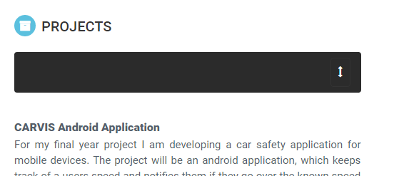

Background
- I used a template just to base the CSS of the skeleton of the page, all of bootstrap features present in the project
I created myself
- This template is located at 3rdwavemedia.com
- This project is hosted on GitHub Pages
Dynamic Content
- For the dynamic aspects of the project I used AngularJS.
- First to read my previous
exam results in from a json file this involved the use of the ng-app & ng-repeat.
This allowed the results to be added dynamically, as opposed to having to manually
add each on to the html file.
- This method was also used for the dynamic retrieval of my skills and proficiency in each
- I also used angular to get the current date and time to display in the footer. This is loaded
dynamically every time a user comes to the page
Interactive Elements
- There was a mixture of CSS and JQuery involved
- Modals were used to enlarge the profile picture, along with my third year project image
- Modals were also used for the Contact form. The contact form is fully functional, it uses 'JotForm' to sends an email to my account when
a user enters the form.
- A Bootstrap Carousel was also used in the second year project to scroll through the different images
- JS Tab (tab.js) was used to display the main content on the pages. This allowed the user to pick their page from the nav bar and
only that page would be displayed to the user
- JQuery accordian was used for the results section to allow the user to expand, hide the results for the different years by clicking on the year
- Navbar Toggle was used to replace the navbar with a button, on smaller screens
